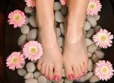
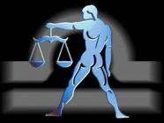
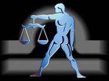
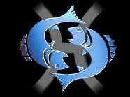
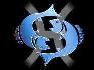

Trate bien a sus pies. Años de uso y abuso pueden maltratarlos. Los pies también pueden ser maltratados por las enfermedades, la mala circulación, las uñas mal cortadas y el uso de zapatos que no calzan bien mas >>

Los recogidos y semirecogidos, son los peinados de fiesta mas usuales a los que una mujer suele recurrir en este 2011 para conseguir looks elegantes y a la moda en una ocasión especial de gala, ya tenga un pelo rizado, ondulado o liso. mas >>

Los labios son una de las partes más eroticas de nuestro cuerpo. Los usamos cuando hablamos, comemos y besamos, sin pretenderlo transmiten nuestra feminidad y sensualidad. Es por esta razón que el lápiz labial es el producto de belleza más vendido. mas >>
 

 
